This Chapter Covers
- Preparing text for large language model training
- Splitting text into word and subword tokens
- Byte pair encoding as a more advanced way of tokenizing text
- Sampling training examples with a sliding window approach
- Converting tokens into vectors that feed into a large language model
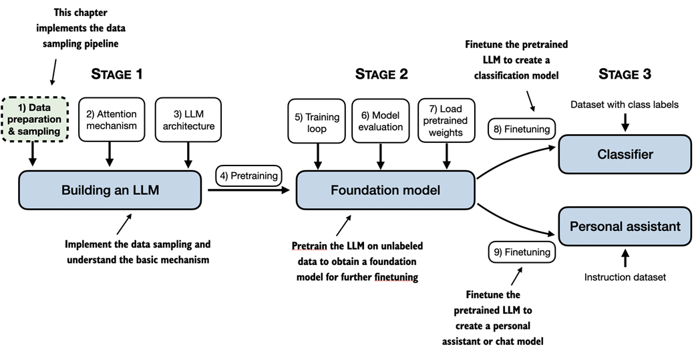
From the book (Raschka, 2025)So far, we have covered the general structure of large language models (LLMs) and learned that they are pretrained on vast amounts of text. Specifically, the focus was on decoder-only LLMs based on the transformer architecture, which underlies ChatGPT and other popular GPT-like LLMs.
During the pretraining stage, LLMs process text one word at a time. Training LLMs with millions to billions of parameters using a next-word prediction task yields models with impressive capabilities. These models can then be further fine-tuned to follow general instructions or perform specific target tasks.
Before we can implement and train LLMs, we need to prepare the training dataset. This chapter covers how to prepare input text for training LLMs, including splitting text into individual word and subword tokens, byte pair encoding, and implementing a sampling and data-loading strategy.
2.1 Understanding Word Embeddings
Deep neural network models, including LLMs, cannot process raw text directly. Since text is categorical, it is not compatible with the mathematical operations used to implement and train neural networks. Therefore, we need a way to represent words as continuous-valued vectors.
What Are Embeddings?
The concept of converting data into a vector format is often referred to as embedding. Using a specific neural network layer or another pretrained neural network model, we can embed different data types -- for example, video, audio, and text.
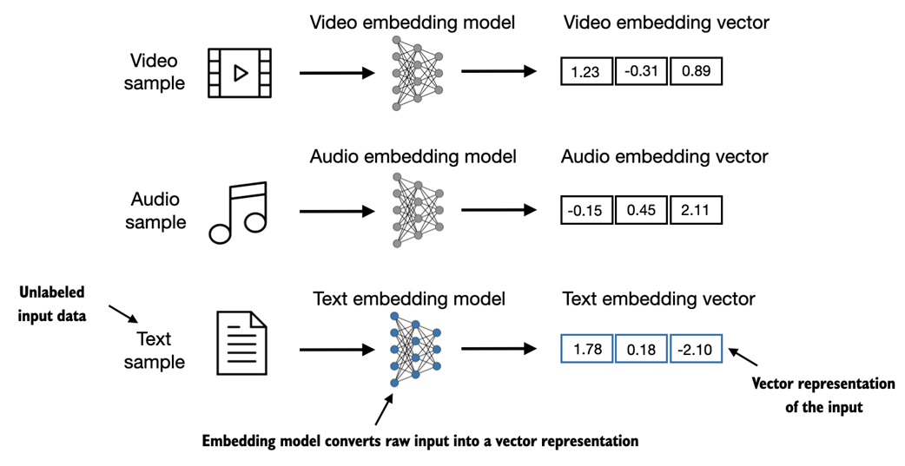
From the book (Raschka, 2025)- Different data formats require distinct embedding models -- an embedding model designed for text would not be suitable for embedding audio or video data
- At its core, an embedding is a mapping from discrete objects (words, images, documents) to points in a continuous vector space
- The primary purpose of embeddings is to convert nonnumeric data into a format that neural networks can process
Types of Text Embeddings
- Word embeddings are the most common form; there are also embeddings for sentences, paragraphs, or whole documents
- Sentence or paragraph embeddings are popular for retrieval-augmented generation (RAG)
- Since our goal is to train GPT-like LLMs (which generate text one word at a time), we focus on word embeddings
Word2Vec
One of the earlier and most popular approaches is Word2Vec, which trained neural network architecture to generate word embeddings by predicting the context of a word given the target word or vice versa. Words that appear in similar contexts tend to have similar meanings.
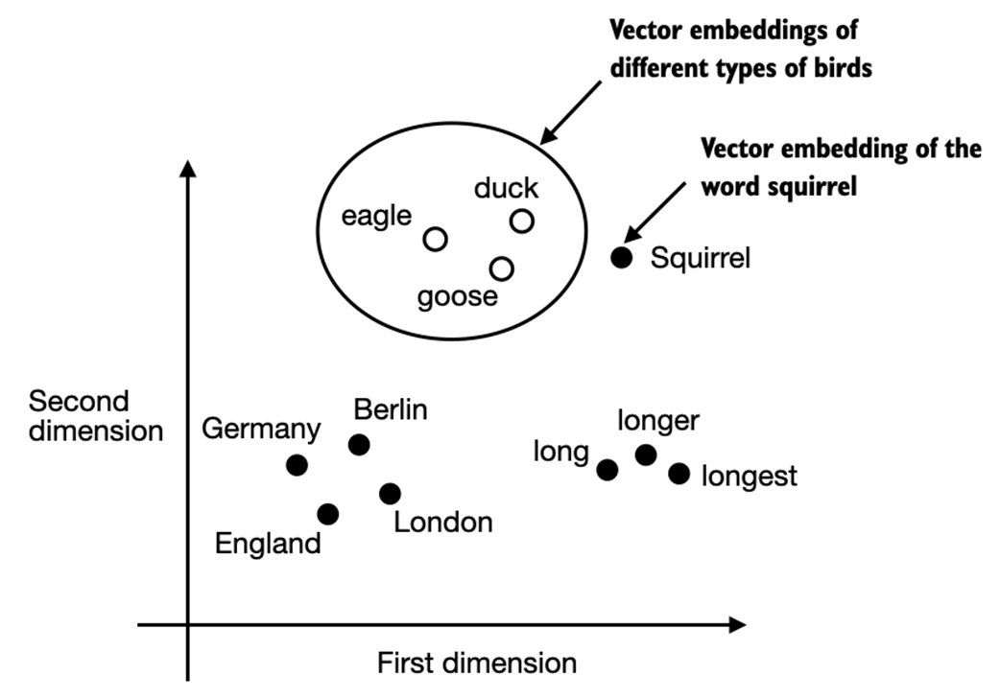
From the book (Raschka, 2025)Embedding Dimensions
- Word embeddings can have varying dimensions, from one to thousands
- Higher dimensionality captures more nuanced relationships but at the cost of computational efficiency
- LLMs commonly produce their own embeddings as part of the input layer, updated during training
- The advantage of optimizing embeddings as part of LLM training (instead of using Word2Vec) is that the embeddings are optimized to the specific task and data at hand
GPT Embedding Sizes
- The smallest GPT-2 models (117M and 125M parameters) use an embedding size of 768 dimensions
- The largest GPT-3 model (175B parameters) uses an embedding size of 12,288 dimensions
2.2 Tokenizing Text
Tokenization is a required preprocessing step for creating embeddings for an LLM. Tokens are either individual words or special characters, including punctuation characters.
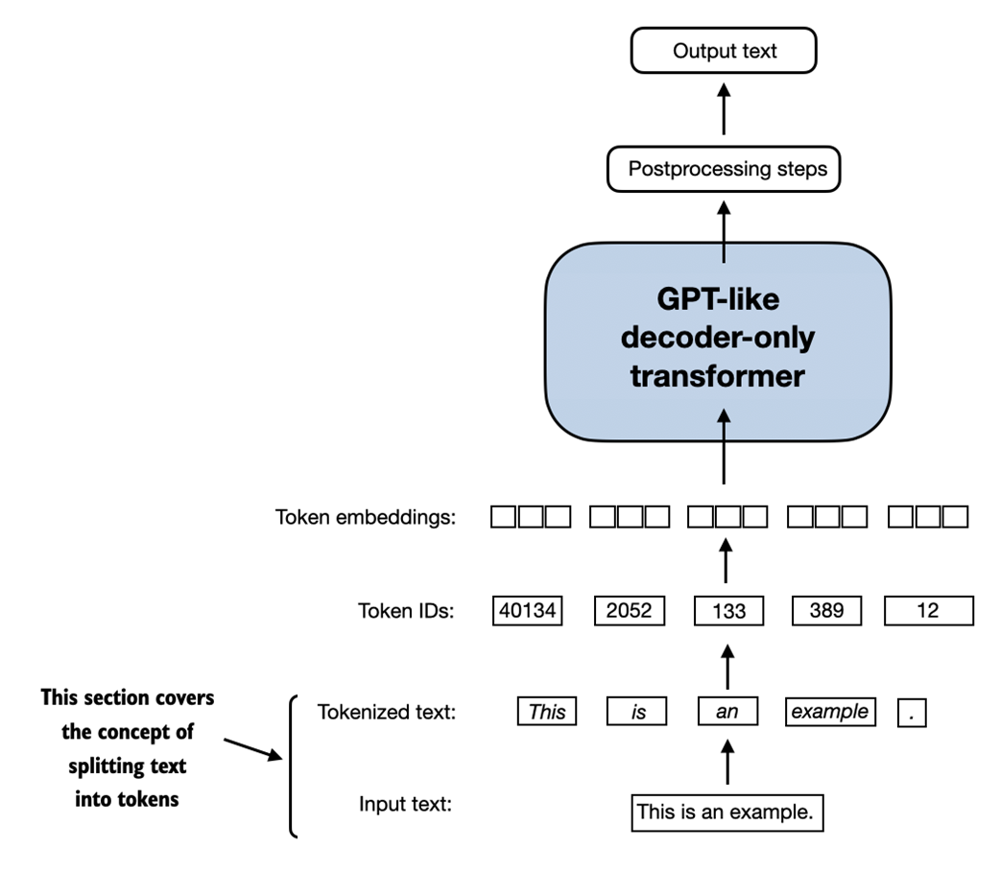
From the book (Raschka, 2025)Loading the Training Text
The text we will tokenize is "The Verdict," a short story by Edith Wharton, released into the public domain. It is available on Wikisource and in the book's GitHub repository.
import urllib.request
url = ("https://raw.githubusercontent.com/rasbt/"
"LLMs-from-scratch/main/ch02/01_main-chapter-code/"
"the-verdict.txt")
file_path = "the-verdict.txt"
urllib.request.urlretrieve(url, file_path)
with open("the-verdict.txt", "r", encoding="utf-8") as f:
raw_text = f.read()
print("Total number of character:", len(raw_text))
print(raw_text[:99])
# Output:
# Total number of character: 20479
# I HAD always thought Jack Gisburn rather a cheap genius...
Simple Tokenization with Regular Expressions
Using Python's re library to split text on whitespace characters:
import re text = "Hello, world. This, is a test." result = re.split(r'(\s)', text) print(result) # ['Hello,', ' ', 'world.', ' ', 'This,', ' ', 'is', ' ', 'a', ' ', 'test.']
Splitting on Punctuation
result = re.split(r'([,.]|\s)', text) result = [item for item in result if item.strip()] print(result) # ['Hello', ',', 'world', '.', 'This', ',', 'is', 'a', 'test', '.']
Handling Additional Special Characters
text = "Hello, world. Is this-- a test?" result = re.split(r'([,.:;?_!"()\']|--|\s)', text) result = [item.strip() for item in result if item.strip()] print(result) # ['Hello', ',', 'world', '.', 'Is', 'this', '--', 'a', 'test', '?']
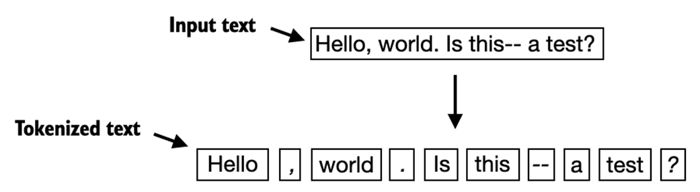
From the book (Raschka, 2025)Tokenizing the Full Text
preprocessed = re.split(r'([,.:;?_!"()\']|--|\s)', raw_text) preprocessed = [item.strip() for item in preprocessed if item.strip()] print(len(preprocessed)) # Output: 4690 (the number of tokens, without whitespaces)
2.3 Converting Tokens into Token IDs
Next, we convert tokens from Python strings to integer representations (token IDs). This is an intermediate step before converting token IDs into embedding vectors. To map tokens to token IDs, we must first build a vocabulary.
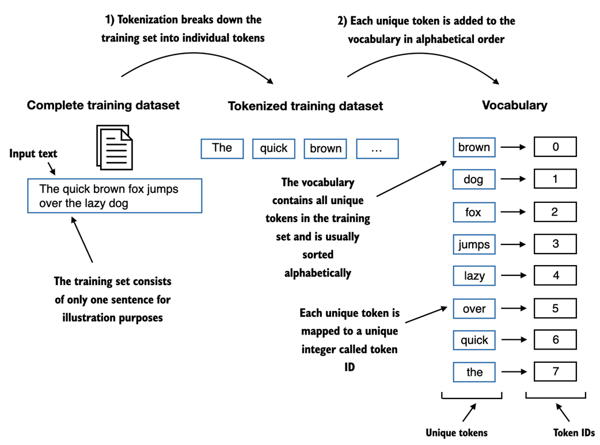
From the book (Raschka, 2025)Building the Vocabulary
all_words = sorted(set(preprocessed))
vocab_size = len(all_words)
print(vocab_size) # Output: 1130
vocab = {token:integer for integer,token in enumerate(all_words)}
# First entries: ('!', 0), ('"', 1), ("'", 2), ...
# Entry 50: ('Hermia', 50)
Implementing a Tokenizer
class SimpleTokenizerV1:
def __init__(self, vocab):
self.str_to_int = vocab
self.int_to_str = {i:s for s,i in vocab.items()}
def encode(self, text):
preprocessed = re.split(r'([,.:;?_!"()\']|--|\s)', text)
preprocessed = [
item.strip() for item in preprocessed if item.strip()
]
ids = [self.str_to_int[s] for s in preprocessed]
return ids
def decode(self, ids):
text = " ".join([self.int_to_str[i] for i in ids])
text = re.sub(r'\s+([,.?!"()\'])', r'\1', text)
return text
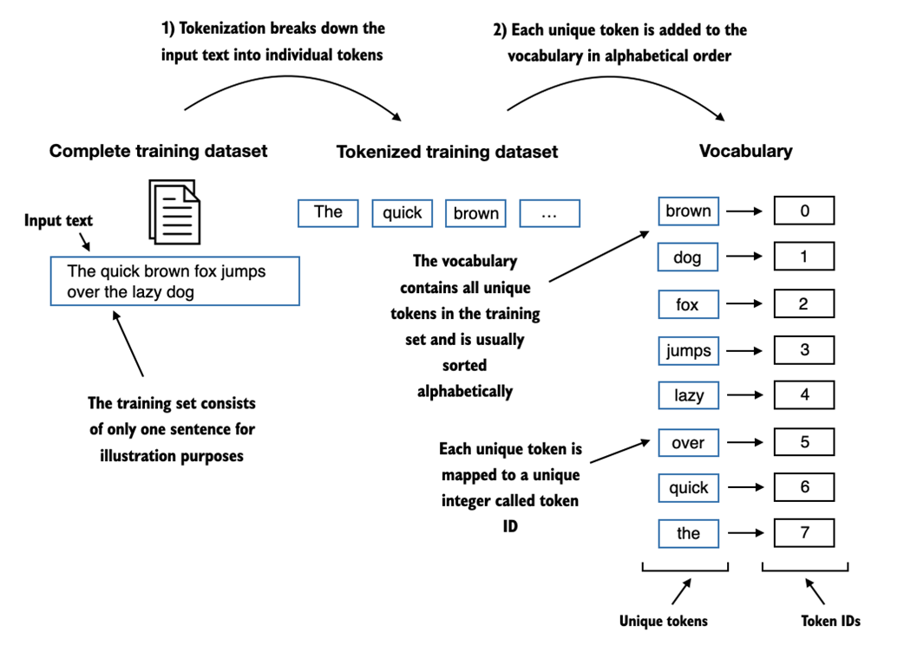
From the book (Raschka, 2025)Handling Unknown Words
The word "Hello" was not in "The Verdict" short story, so tokenizer.encode("Hello, do you like tea?") raises a KeyError. This highlights the need for large, diverse training sets to extend the vocabulary.
2.4 Adding Special Context Tokens
We need to modify the tokenizer to handle unknown words and add special context tokens that enhance the model's understanding. We will add two new tokens: <|unk|> and <|endoftext|>.
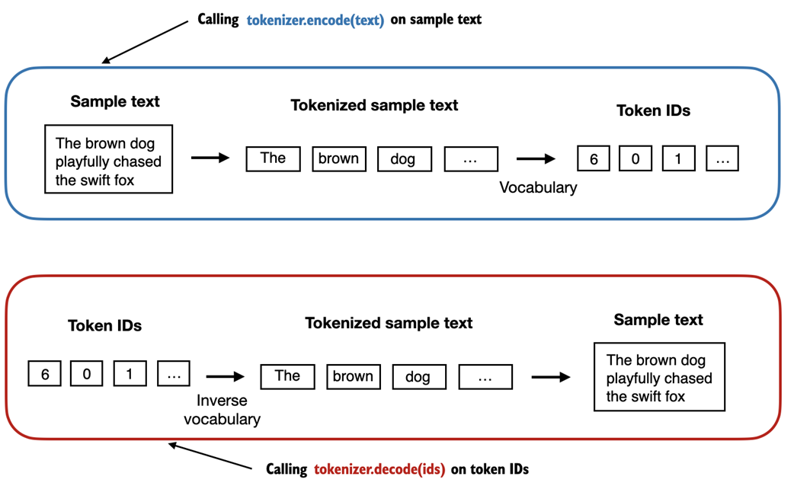
From the book (Raschka, 2025)<|unk|> token to represent new and unknown words not part of the training data. We also add an <|endoftext|> token to separate two unrelated text sources.
class SimpleTokenizerV2:
def __init__(self, vocab):
self.str_to_int = vocab
self.int_to_str = {i:s for s,i in vocab.items()}
def encode(self, text):
preprocessed = re.split(r'([,.:;?_!"()\']|--|\s)', text)
preprocessed = [
item.strip() for item in preprocessed if item.strip()
]
preprocessed = [item if item in self.str_to_int
else "<|unk|>" for item in preprocessed]
ids = [self.str_to_int[s] for s in preprocessed]
return ids
def decode(self, ids):
text = " ".join([self.int_to_str[i] for i in ids])
text = re.sub(r'\s+([,.:;?!"()\'])', r'\1', text)
return text
Other Special Tokens
- [BOS] (beginning of sequence) -- marks the start of a text
- [EOS] (end of sequence) -- positioned at the end of a text; useful when concatenating unrelated texts
- [PAD] (padding) -- extends shorter texts to match the longest text in a batch
The GPT tokenizer only uses <|endoftext|> for simplicity. It serves as both EOS and padding token. GPT models also do not use <|unk|>; instead, they use byte pair encoding, which breaks words into subword units.
2.5 Byte Pair Encoding
The BPE tokenizer was used to train LLMs such as GPT-2, GPT-3, and the original model used in ChatGPT. We use the open source library tiktoken (from OpenAI), which implements the BPE algorithm efficiently in Rust.
import tiktoken
tokenizer = tiktoken.get_encoding("gpt2")
text = (
"Hello, do you like tea? <|endoftext|> In the sunlit terraces"
" of someunknownPlace."
)
integers = tokenizer.encode(text, allowed_special={"<|endoftext|>"})
print(integers)
# [15496, 11, 466, 345, 588, 8887, 30, 220, 50256, 554, 262,
# 4252, 18250, 8812, 2114, 286, 617, 34680, 27271, 13]
strings = tokenizer.decode(integers)
print(strings)
# Hello, do you like tea? <|endoftext|> In the sunlit terraces of someunknownPlace.
- The
<|endoftext|>token is assigned token ID 50256. The BPE tokenizer has a total vocabulary size of 50,257. - The BPE tokenizer can encode and decode unknown words (like
someunknownPlace) without needing<|unk|>tokens.
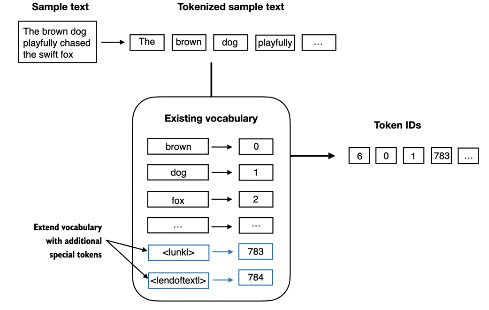
From the book (Raschka, 2025)How BPE Builds Its Vocabulary
- BPE starts with all individual single characters in its vocabulary ("a," "b," etc.)
- It iteratively merges frequent character combinations into subwords (e.g., "d" + "e" = "de")
- Frequent subwords are then merged into words
- Merges are determined by a frequency cutoff
2.6 Data Sampling with a Sliding Window
The next step is to generate the input-target pairs required for training an LLM. LLMs are pretrained by predicting the next word in a text.
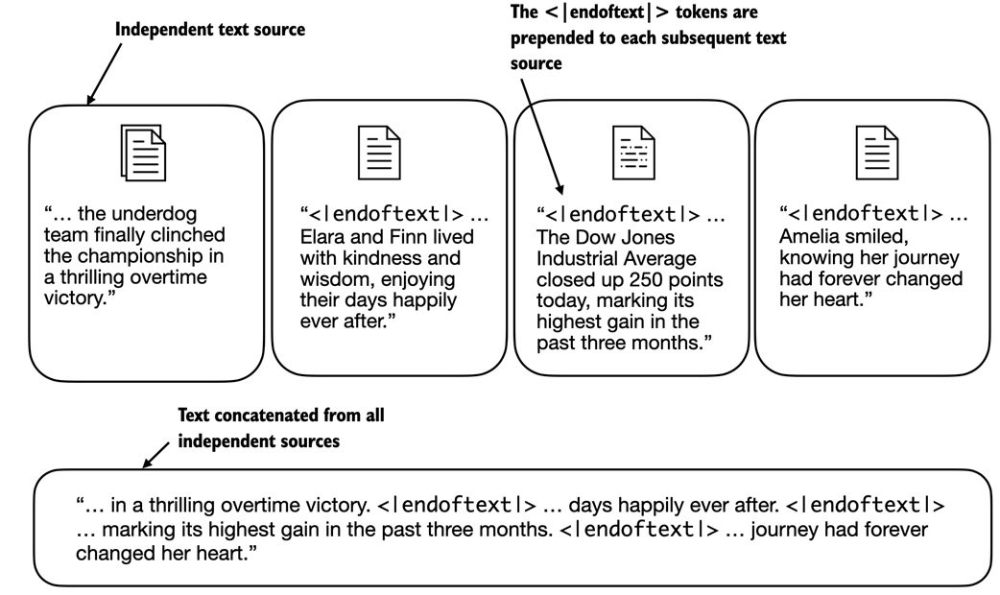
From the book (Raschka, 2025)Creating Input-Target Pairs
enc_text = tokenizer.encode(raw_text)
print(len(enc_text)) # 5145 total tokens
enc_sample = enc_text[50:]
context_size = 4
x = enc_sample[:context_size]
y = enc_sample[1:context_size+1]
print(f"x: {x}") # x: [290, 4920, 2241, 287]
print(f"y: {y}") # y: [4920, 2241, 287, 257]
for i in range(1, context_size+1):
context = enc_sample[:i]
desired = enc_sample[i]
print(tokenizer.decode(context), "---->", tokenizer.decode([desired]))
# and ----> established
# and established ----> himself
# and established himself ----> in
# and established himself in ----> a
Implementing the Dataset
import torch
from torch.utils.data import Dataset, DataLoader
class GPTDatasetV1(Dataset):
def __init__(self, txt, tokenizer, max_length, stride):
self.input_ids = []
self.target_ids = []
token_ids = tokenizer.encode(txt)
for i in range(0, len(token_ids) - max_length, stride):
input_chunk = token_ids[i:i + max_length]
target_chunk = token_ids[i + 1: i + max_length + 1]
self.input_ids.append(torch.tensor(input_chunk))
self.target_ids.append(torch.tensor(target_chunk))
def __len__(self):
return len(self.input_ids)
def __getitem__(self, idx):
return self.input_ids[idx], self.target_ids[idx]
def create_dataloader_v1(txt, batch_size=4, max_length=256,
stride=128, shuffle=True, drop_last=True,
num_workers=0):
tokenizer = tiktoken.get_encoding("gpt2")
dataset = GPTDatasetV1(txt, tokenizer, max_length, stride)
dataloader = DataLoader(
dataset, batch_size=batch_size,
shuffle=shuffle, drop_last=drop_last,
num_workers=num_workers
)
return dataloader
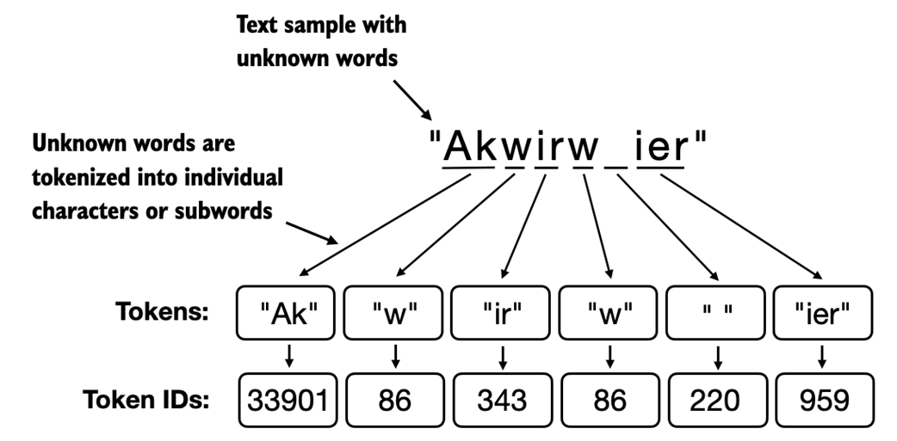
From the book (Raschka, 2025)2.7 Creating Token Embeddings
The last step in preparing the input text for LLM training is to convert the token IDs into embedding vectors. These embedding weights are initialized with random values as the starting point for the LLM's learning process.
input_ids = torch.tensor([2, 3, 5, 1]) vocab_size = 6 output_dim = 3 torch.manual_seed(123) embedding_layer = torch.nn.Embedding(vocab_size, output_dim) print(embedding_layer.weight) # Parameter containing: # tensor([[ 0.3374, -0.1778, -0.1690], # [ 0.9178, 1.5810, 1.3010], # [ 1.2753, -0.2010, -0.1606], # [-0.4015, 0.9666, -1.1481], # [-1.1589, 0.3255, -0.6315], # [-2.8400, -0.7849, -1.4096]], requires_grad=True)
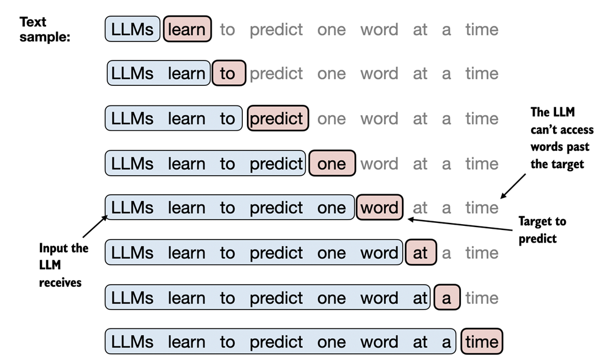
From the book (Raschka, 2025)print(embedding_layer(torch.tensor([3]))) # tensor([[-0.4015, 0.9666, -1.1481]]) print(embedding_layer(input_ids)) # tensor([[ 1.2753, -0.2010, -0.1606], # [-0.4015, 0.9666, -1.1481], # [-2.8400, -0.7849, -1.4096], # [ 0.9178, 1.5810, 1.3010]])
2.8 Encoding Word Positions
Token embeddings are suitable input for an LLM, but the self-attention mechanism has no notion of position or order for tokens within a sequence. The same token ID always gets mapped to the same vector regardless of its position.
Positional Embeddings
- Relative positional embeddings: Focus on the relative position or distance between tokens. The model learns "how far apart" rather than "at which exact position." Can generalize to varying sequence lengths.
- Absolute positional embeddings: Directly associated with specific positions. Each position has a unique embedding added to the token's embedding. OpenAI's GPT models use this approach, optimized during training.
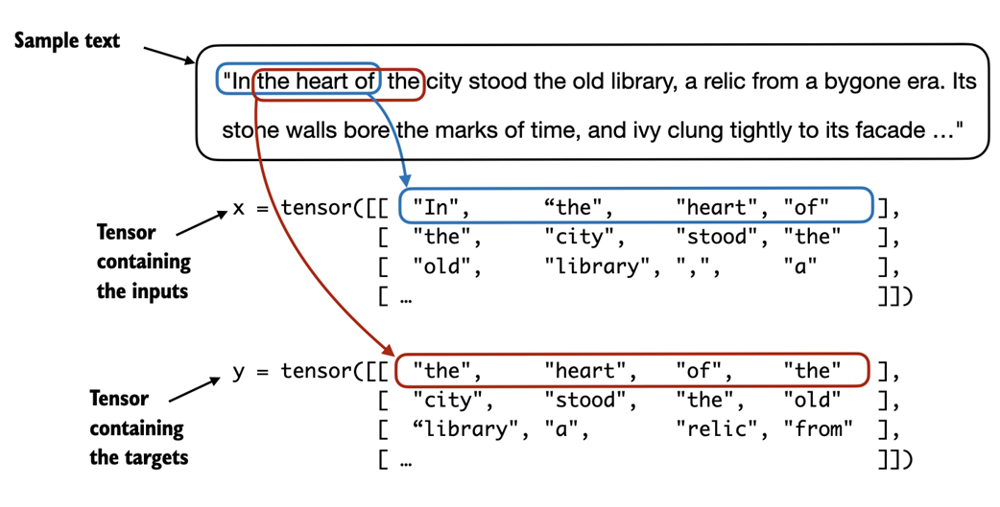
From the book (Raschka, 2025)vocab_size = 50257
output_dim = 256
token_embedding_layer = torch.nn.Embedding(vocab_size, output_dim)
max_length = 4
dataloader = create_dataloader_v1(
raw_text, batch_size=8, max_length=max_length,
stride=max_length, shuffle=False)
data_iter = iter(dataloader)
inputs, targets = next(data_iter)
token_embeddings = token_embedding_layer(inputs)
print(token_embeddings.shape) # torch.Size([8, 4, 256])
context_length = max_length
pos_embedding_layer = torch.nn.Embedding(context_length, output_dim)
pos_embeddings = pos_embedding_layer(torch.arange(context_length))
print(pos_embeddings.shape) # torch.Size([4, 256])
input_embeddings = token_embeddings + pos_embeddings
print(input_embeddings.shape) # torch.Size([8, 4, 256])
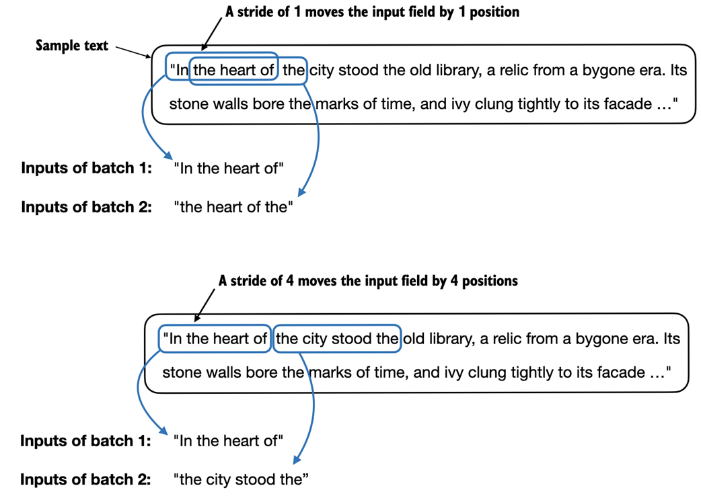
From the book (Raschka, 2025)Summary
- LLMs require textual data to be converted into numerical vectors, known as embeddings, since they cannot process raw text. Embeddings transform discrete data (like words or images) into continuous vector spaces, making them compatible with neural network operations.
- As the first step, raw text is broken into tokens, which can be words or characters. Then, the tokens are converted into integer representations, termed token IDs.
- Special tokens, such as
<|unk|>and<|endoftext|>, can be added to enhance the model's understanding and handle various contexts, such as unknown words or marking the boundary between unrelated texts. - The byte pair encoding (BPE) tokenizer used for LLMs like GPT-2 and GPT-3 can efficiently handle unknown words by breaking them down into subword units or individual characters.
- We use a sliding window approach on tokenized data to generate input-target pairs for LLM training.
- Embedding layers in PyTorch function as a lookup operation, retrieving vectors corresponding to token IDs. The resulting embedding vectors provide continuous representations of tokens, crucial for training deep learning models like LLMs.
- While token embeddings provide consistent vector representations for each token, they lack a sense of position. Positional embeddings (absolute, as used by GPT) are added to the token embedding vectors and optimized during training.